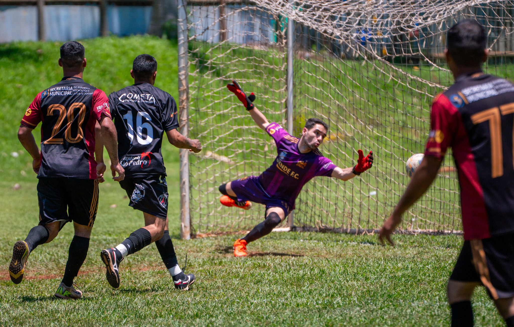
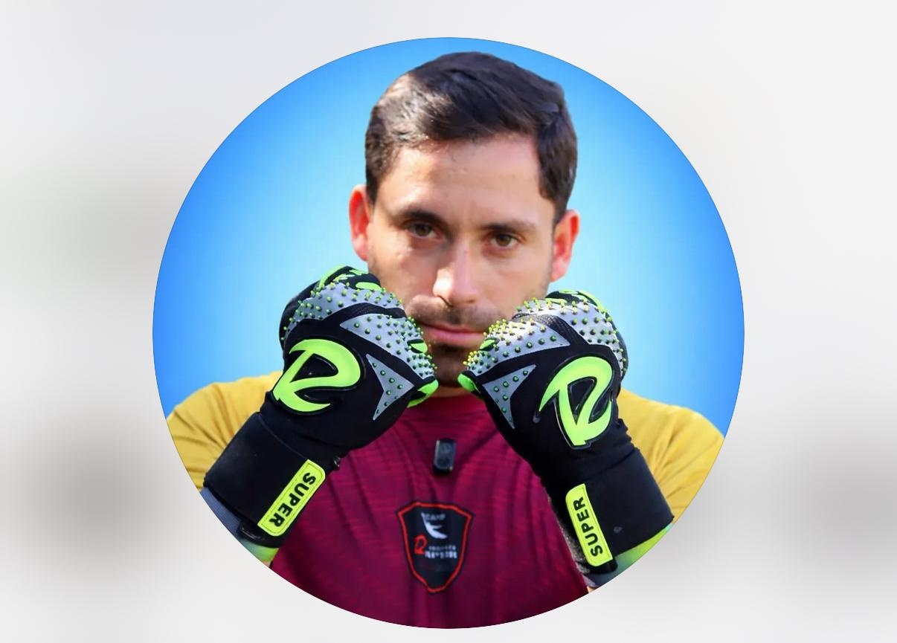
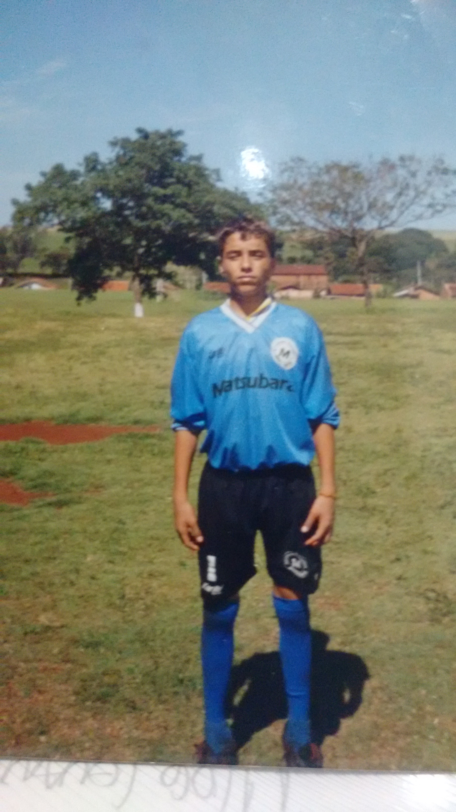
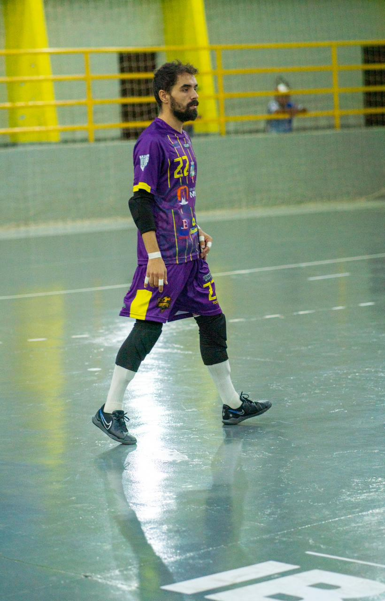
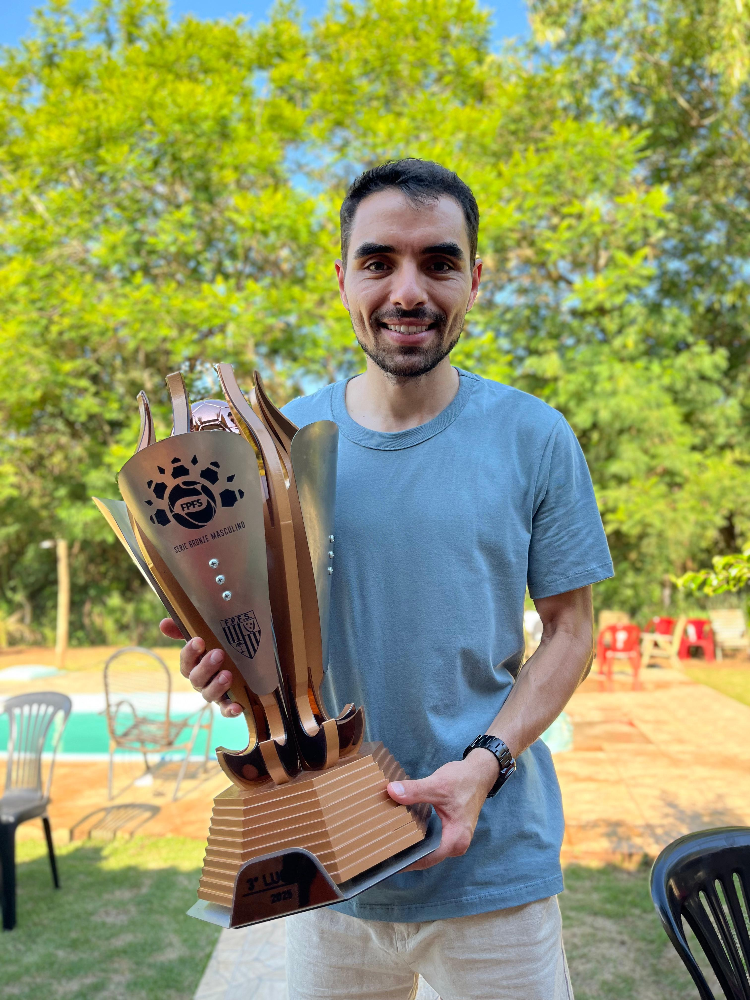

Descubra o método Reflexo de Gato™ — o sistema de treino de academia que transforma goleiros lentos em paredões explosivos como Buffon, Courtois e Neuer.
QUERO COMPRAR AGORA 🧤
A verdade é dura: treinar só no gol não basta. Os melhores do mundo treinam o corpo na academia com método específico — e é isso que ninguém te conta.
O primeiro método de treino de academia 100% desenhado para goleiros — focado nos 3 pilares que separam o goleiro amador do profissional de elite:
Saídas mais rápidas do chão, impulsão para cruzamentos altos e potência nas defesas em canto.
Treine seu sistema neuromuscular para reagir em milissegundos — como um gato selvagem.
Corpo solto, articulações fortes e amplitude total para defesas impossíveis.
Treinos estruturados de 45 a 60 minutos, 3x por semana, executados na academia. Cada sessão é montada com o equilíbrio exato entre mobilidade, força funcional, potência e velocidade.
Cada exercício demonstrado em vídeo para você executar com a técnica perfeita — sem risco de lesão.
Acompanhe seu progresso semana a semana e veja na prática o quanto está ficando mais explosivo.
O que diferencia o goleiro que aguenta a pressão do que desaba na hora H. Os princípios mentais que aprendi disputando Copa do Brasil e jogando profissionalmente.
Um preparador físico especializado cobra de R$ 300 a R$ 800 por mês. Um curso presencial pode passar de R$ 2.000.
Mas você não vai pagar nada perto disso.
Teste o método por 7 dias. Se você não sentir que está ficando mais explosivo, mais ágil e mais confiante no gol, devolvemos 100% do seu dinheiro. Sem perguntas, sem burocracia.
O risco é todo meu. A transformação é toda sua.
Sim! O Reflexo de Gato™ tem progressão. Você começa no seu nível e evolui sem risco de lesão.
Sim. Esse método foi desenhado para ser executado em academia, com equipamentos básicos (halteres, barras, caixa de salto). É justamente isso que faz ele entregar resultados profissionais — e não treino genérico de quarto.
A maioria dos goleiros sente diferença de explosão e mobilidade já nas primeiras 2 a 3 semanas de treino consistente.
O ideal é 3x por semana, 45-60 minutos. Menos que isso, o resultado vem mais devagar — mas vem.
O método funciona para goleiros de 14 a 40+ anos. Eu mesmo virei profissional aos 33. Se você joga no gol, o método é pra você.
"O Reflexo de Gato™ tornou minhas defesas mais rápidas e meus treinos muito mais eficientes. Recomendo para qualquer goleiro que queira sair do amador e virar um paredão."

Goleiro moderno
200k seguidores
Tobias, 35 anos. Disputou a Copa do Brasil Sub-15, foi goleiro do Paraná Clube de Futsal, virou goleiro profissional na Série Bronze aos 33 anos e como treinador conquistou o acesso Bronze → Prata e o título Paranaense em 2025. O método que você vai usar é o mesmo aplicado no profissional.



A pergunta é: quanto tempo mais você vai aceitar ser o goleiro que toma frangos por falta de explosão?
Por menos do que custa uma pizza, você pode começar a treinar como Buffon, Courtois e Neuer treinam.
SIM, EU QUERO O MÉTODO 🧤✅ Acesso imediato • ✅ Garantia de 7 dias • ✅ Suporte via WhatsApp